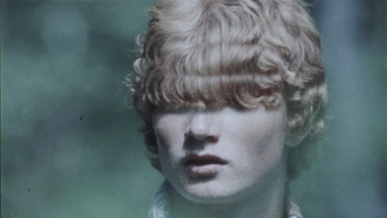

Horizōn

Sid Iandovka, Anya Tsyrlina
|
CH,
RU, US 2019 7 min | HD | ohne Dialoge
|
Dienstag 15 okt | 20.30 | werkstattkino | short film
night
Das Knistern analoger Tonspuren von Siebzigerjahre-Wochenschau-Sprengseln mit fliegenden Raumkörpern und mit Blumen beschenkten jungen Menschen führt in eine verflossene Zeit. Die Bilder stammen aus Sibirien, wo die in Basel lebende Künstlerin und Filmemacherin Anya Tsyrlina geboren wurde. Irrlichternd verdichtet sich der Film zu einer Reflektion über Erinnerung, Vergänglichkeit und Erfahrung. (Bildrausch Basel)
Sid Iandovka geb. in Sibirien. Künstler, Musiker und Filmemacher. Er lebt und arbeitet in Brooklyn, New York und Basel. |
Anya Tsyrlina geb. in Sibirien, Nowo-sibirsk. Künstlerin und Filmemacherin. Sie lebt und arbeitet seit 2002 in Basel. |
Filme (Sid Iandovka) Phenomenon 2019 | Horizōn 2019 |
Filme (Anya Tsyrlina) Filme I Don't Believe In Anarchy 2016 Phenomenon 2019 | Horizōn 2019 |